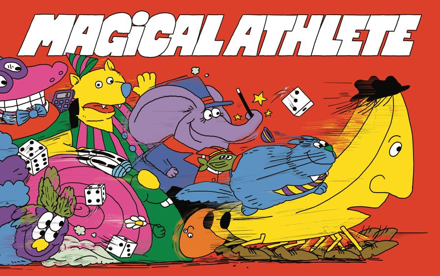
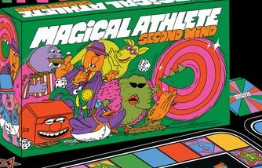
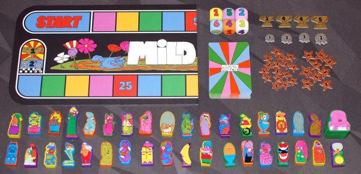
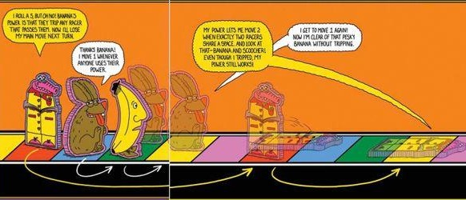
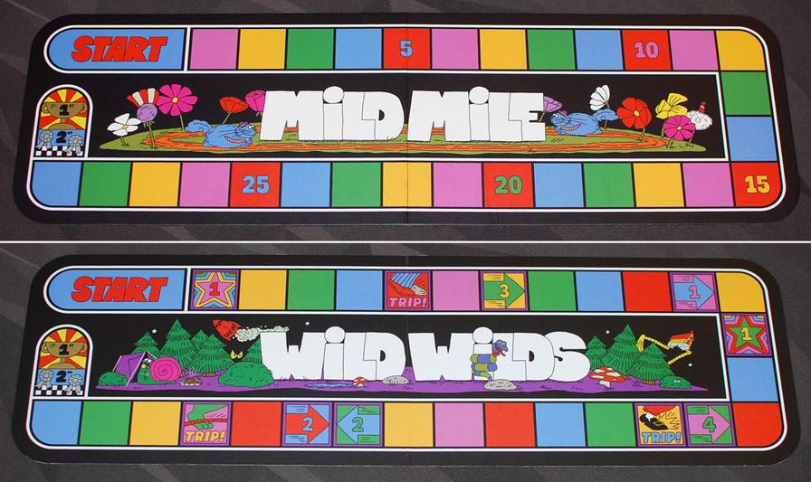

一代
炼金术士
Alchemist当我的主要移动掷出 1 或 2 时，我可以改为移动 4 格。8
风味：永远在追寻把“此物”变成“彼物”的古老秘密。9
加速骰子
Magical Athlete（2025）与续作 Magical Athlete: Second Wind（2026 年公布）一页看全：玩法规则、计分、四条赛道（含狂野赛道逐格图解）、72 名选手技能、13 张扭扭卡、两代差异和混玩方法。页面里的主要事实都标了出处编号，点编号可以直接跳到对应的来源链接。


从 2002 年的日本小众游戏到 2026 年的续作
两代通用，按官方规则书顺序


结算争议基本都出在这几个词上
| 领先 / 落后 | 停在离终点更近的格子算领先，离起点更近算落后；同格的选手互不算领先或落后。已经冲线的选手不算“领先者”9 |
|---|---|
| 独自 | 所在格没有其他选手9 |
| 移动 | 通过主要移动、能力或任何写明“移动”的方式换格子。“移动 0 格”不算移动，不能触发和移动有关的能力9 |
| 经过 / 超过 | 一次移动开始时在对方后面，结束时在对方前面9。博主解读二代规则时特别提醒：向后移动越过别人也算经过，经过类能力会被频繁触发4 |
| 同处一格 | 两名选手都实际停在这一格才算；移动或传送途中短暂占到同一格不算9 |
| 格子 | 起点也算一格；终点线之外的任何位置都不算格子9 |
| 绊倒 | 被绊倒的选手跳过下一次主要移动，连骰子都不掷，但能力照样生效，也能被其他方式移动。先走完当前这次移动再把棋子放倒，下回合扶起来9 |
| 传送（warp） | 直接把棋子放到新格子，不算“移动”，不会触发经过、移动类能力9 |
| 其他细则 | 写明时点的能力（如“在我的主要移动前”）每回合只生效一次；选手冲线或离场后能力失效（另有说明除外）；能重掷时只重掷最近那颗骰子；同时到达一格也算一起停在这格9 |
一代两面 + 二代两面

没有任何特殊格，纯拼骰子和技能。格子上印着 5、10、15、20、25 的里程数，方便数格1012。玩家讲解视频认为飞艇、大长腿这类稳定加速的选手最适合这一面1819。
停在特殊格上才会触发。箭头格的移动算一次单独的移动，不算主要移动9。下图按官方版图照片逐格整理，格号从起点之后第 1 格开始数10。
赛道拉直成一行的示意图，从左往右跑：
| 格号 | 格子 | 停在上面会怎样 |
|---|---|---|
| 1 | 星星 1 | 拿 1 枚 1 分标记 |
| 5 | 石头 TRIP | 被绊倒，跳过下一次主要移动 |
| 7 | 箭头 3 | 前进 3 格，落到第 10 格 |
| 11 | 箭头 1 | 前进 1 格，落到第 12 格 |
| 13 | 星星 1 | 拿 1 枚 1 分标记 |
| 16 | 箭头 4 | 后退 4 格，回到第 12 格 |
| 17 | 石头 TRIP | 被绊倒 |
| 23 | 箭头 2 | 前进 2 格，落到第 25 格 |
| 24 | 箭头 2 | 后退 2 格，回到第 22 格 |
| 26 | 石头 TRIP | 被绊倒 |
说明：规则书只写了“停在箭头格就按箭头方向移动对应格数”9，没有给格号。上表的格号和方向是按官方版图实拍逐格数出来的：起点算第 0 格，最后一格是第 29 格，一共 30 格10。实物版图的下排是从右往左跑的，所以照片里朝右的箭头其实是后退。
一代 36 名 + 二代 36 名，可以按代数、类型筛选，也可以搜索
没有符合条件的选手，换个关键词或类型试试。
当我的主要移动掷出 1 或 2 时，我可以改为移动 4 格。8
风味：永远在追寻把“此物”变成“彼物”的古老秘密。9
绊倒停到我所在格的任何选手；我停到别人所在格时，也绊倒对方。8
补充 和决斗大师同格时可以决斗，但决斗大师照样被绊倒；催眠师把我拉过去，催眠师也会被绊倒。9
风味：这处房产跑得飞快。9
我绊倒任何经过我的选手。8
补充 跳蛙跳过香蕉也算经过，同样会被绊倒（按规则书对“经过”的定义推导，规则书未单列此条）。26
风味：和你我一样，一点都不能吃。9
在赛道第二个弯道之前开始回合时，我的主要移动 +3；在该弯道或之后，主要移动 −1。8
风味：为飞翔而造，为爆炸而生。9
当我经过一名选手时，对方移动 −2（后退 2 格）。8
补充 不会被踢到起点之后。9
风味：关键来了（原文 Here’s the kicker，和“踢”双关）。926
在我的主要移动前，我可以让排在最后的选手移动 2 格；这样做时，我移动 1 格。8
补充 多名选手并列最后要一起移动，我仍只走 1 格；如果我自己就是最后，先走 2 格再走 1 格，算两次移动。9
风味：一团纯粹的热情。9
和我同格的所有选手主要移动 +1，包括我自己。8
风味：当你是某种蜥蜴时，相信自己就更重要了。9
又译 模仿猫
我拥有当前领先选手的能力；并列领先时由我挑选。8
补充 持续复制，不只在自己回合；和被复制者能力冲突时（比如巨婴）以对方为准；不复制“比赛开始前”类能力。9
风味：和另一只猫很像，但又不一样。9
又译 骰贩子
任何人每回合都可以重掷一次主要移动骰；其他选手这样做时，我移动 1 格。8
风味：他的职业是靠掷 d100 随机表选出来的。9
又译 决斗者
有选手和我同格时，我可以喊“决斗！”：双方各掷骰，点数高的一方移动 2 格，平局算我赢。8
补充 一回合内可以多次决斗，不在自己回合也行；但不能打断正在进行的动作，比如插在别人掷骰和移动之间。9
风味：手里有把细剑，看什么都像一场决斗。9
比赛开始前，从牌库抽 3 张新选手牌，选 1 张，我拥有它的能力。8
补充 仍使用彩蛋的棋子；能获得“比赛开始前”类能力。9
风味：你真该看看那只鸡。9
我可以不掷主要移动骰，改为与另一名选手互换位置。8
补充 互换算传送，不算移动；双方同时换位，不会短暂同格。9
风味：永远在寻找失散的双胞胎兄弟。9
我可以预测主要移动会掷出的点数；猜对了，本回合结束后我再进行一个回合。8
风味：但在爱情里是个傻瓜。9
又译 黏糊怪
其他选手主要移动 −1。8
补充 减的是移动格数，不是骰面点数：6 不会变成 5，也不妨碍狗腿子触发。9
风味：还挺爱抱抱的。9
我的主要移动 +2；回合开始时如果我独自领先，就跳过主要移动。8
风味：他唯一跑不过的，是自己的傲慢。9
又译 起哄者
当一名选手回合结束时，离他回合开始的位置不超过 1 格，我移动 2 格。8
补充 对刚从绊倒中站起来的选手也生效。9
风味：这是建设性批评。9
除起点外，任何人都不能和我同格；要发生时，改为把该选手放到我身后一格。8
补充 被放到我身后不算移动，视为直接停在那一格。9
风味：她已经 30 岁了。9
在我的主要移动前，我可以把一名选手传送到我的格子。8
风味：这段假的背景故事，是他自己植入的。9
其他选手主要移动掷出 1 时，对方跳过这次移动，我移动 1 格。8
补充 和船长同场时，我先前进 1 格，然后才轮到船长。9
风味：给她一寸，她就只拿一寸。9
又译 随从
其他选手主要移动掷出 6 时，在对方移动前我先移动 2 格。8
风味：你开心，他就开心。9
又译 跳跳蛙
移动时，我跳过有其他选手的格子。8
风味：常常被人从下往上看见。9
我可以不掷主要移动骰，直接移动 5 格。8
补充 这仍算主要移动，会被黏黏怪减速，也能吃到教练的加成。9
风味：也有胳膊，但谁在乎呢。9
又译 可爱的失败者
在我的主要移动前，如果我独自垫底，拿 1 枚 1 分标记。8
风味：失败者学院的全班第一。这可不是好事。9
我可以重掷主要移动骰，最多 2 次。8
补充 必须用最后一次的结果。9
风味：他还会放火球术。9
在我的第一个回合开始时，预测哪名选手会获胜；猜对了比赛立即结束，我获得第 2 名。8
补充 预测自己获胜并猜中，就能同时拿第 1 和第 2 名。9
风味：他唯一办不成的计划，是让爸妈复合。9
当我停在恰好有一名其他选手的格子上时，对方被淘汰出本场比赛。8
补充 吃到没人能拿第 2 名时，本场的银奖章没人拿，直接移除。9
风味：“用于满足饥饿的咀嚼孔”（Mastication Orifice Utilized Toward Hunger），首字母拼成 MOUTH。9
在我的主要移动前，所有选手朝我移动 1 格；每有一名其他选手和我同格，我的主要移动 +1。8
补充 巨婴挤进我这一格时，这格的所有人都被推回 1 格。9
风味：有人给一只动物戴了顶帽子，就变成这样了。9
掷出主要移动骰后，我可以改为移动双倍点数；这样做的话，我会被绊倒。8
补充 先掷骰，再决定要不要“点火”。9
风味：兼职脑外科医生。9
当任何人停在恰好有另一名选手的格子上时，我移动 2 格。8
补充 两名选手一起移动时（比如吸盘鱼跟着走）会触发两次。9
风味：这个物种的最后一只。9
另一名选手的能力生效时，我移动 1 格。8
补充 黏黏怪每次 −1、骰子商人每次重掷、跳蛙每跳过一格、魔术师每次重掷（即使没采用）都各算一次。9
风味：哦，我就从你旁边蹭过去一下。9
比赛开始前，我拿 4 枚 1 分标记；主要移动掷出 6 时，不移动，改为传送回起点并失去 1 枚。8
补充 掷出 6 超过 4 次时，只要还有分就继续扣；传送回起点后，我仍照常进行主要移动。9
风味：保持谦逊，继续苦干。9
任何人主要移动掷出 1 时，下一个轮到我行动。8
补充 我行动完后从我左手边继续；如果我又掷出 1，就再轮到我。9
风味：方向盘是假的，他也只是和大家一样往前走。9
其他选手必须正好走到终点所需的格数才能冲线；超出就不能移动。8
补充 包括能力带来的移动：比如决斗大师在终点前一格赢了决斗（移动 2），也冲不了线。9
风味：没人拜托，他就自己校对了这本规则书。9
和我同格的选手移动时，我可以跟着移到对方的新格子。8
补充 一旦跟着走就得走完对方整次移动；可以靠这个冲线。9
风味：有被抛弃焦虑。9
又译 第三者
在我的主要移动前，我可以传送到任意恰好有 2 名选手的格子。8
补充 传送后照常进行主要移动。9
风味：在找自己的另一半。9
比赛开始前，我可以选一名赢过之前比赛的选手，用他的能力参赛。8
补充 仍使用双胞胎的棋子；也能获得“比赛开始前”类能力。9
风味：和谁都不是亲戚，只是长得和大家一模一样。9
当我的主要移动掷出 1 或 2 时，我变身为狼人版大嘴；所有被我超过的选手都会被淘汰。5
补充 有专属模型，变身时替换棋子，本场剩余时间保持变身；变身在移动开始前完成，所以当回合就能淘汰被超过的选手。5
风味：遭狼人噬咬，变成一张靠巫术繁殖、专为饕餮而生的巨口（和一代大嘴巴一样，英文风味文字的首字母拼出名字）。5
当我是最后一名时，主要移动掷骰点数 ×3；不是最后一名时，主要移动改为向后移动。5
补充 向后移动不翻三倍；遇到双重反转改为向前；其他效果改变格数时，按改变后的总格数算。5
风味：在失败者学院里常年垫底，就算这样，依旧烂得不行。5
我的主要移动不掷骰，而是偷偷把骰子设成任意点数；如果我右手边的玩家猜中这个点数，我就不能移动。5
补充 这不算一次掷骰，不能用来触发各种能力。5
风味：“她来自波士顿。”（拿波士顿体育圈的作弊黑历史玩梗）5
跑在我前面的选手，我可以让他们每回合重掷一次主要移动骰。5
风味：因为实话说太多，被 BoardGameGeek 论坛封禁。5
在我的回合开始时触发换位：字幕能确认的部分是“否则我和最后一名互换位置”，前半句条件字幕缺失，以正式规则为准。5
补充 这个效果算传送；有多名选手并列第一或并列垫底时，由我选择交换对象。5
风味：自尊心爆棚，只差一座托尼奖。5
第一个冲线的选手会被淘汰，我获得该选手的能力。5
补充 被淘汰者不算完成比赛，拿不到分，也不能触发智多星这类预测获胜的能力；我不能用赛后才触发的能力（如重播选手）；就算触手怪已经用过它的能力，我拿到后照样能用；如果我自己第一个冲线，同样会被淘汰。5
风味：“你倒是有自知之明。要是出点什么意外，那就太可惜了。”（黑手党式的委婉威胁）5
英文名是“哥特 + 树懒”的造词
我的主要移动 −1；比赛结束时，如果我还没通过第二个弯道，获得 3 分。5
补充 停在第二个弯道上也算没通过，照样拿分。5
风味：全靠眼线替他奋力奔跑。5
比赛开始时我骑着野猪，主要移动 +2；有选手停在野猪所在格时，那名选手接管这头野猪。5
补充 我有两个棋子；野猪不算选手，只给骑手 +2；骑野猪的选手可以被绊倒；这是“比赛开始前”能力，黑帮替身抢不走野猪；替补复制我的能力时，一个人可以同时骑两头野猪。5
风味：严格恪守猪之骑士准则。5
回合结束时，如果我正好在某名选手身后一格，我获得一个额外回合。5
补充 那一格有多名选手也同样生效。5
风味：就像玩跳蛙游戏，只不过更湿一点。5
选手停到我的格子上时，要付给我 1 分；付不起就被绊倒。5
补充 欢迎客人自行换零钱。5
风味：根本不是这个游戏的角色，照样收租（致敬《大富翁》）。5
我的主要移动 +3；主要移动掷出 6 时，我被淘汰。5
风味：栽在了父子心结上（和一代西西弗斯同属希腊神话组）。5
字幕写作“半王者”，英文听作“king trooper”；按技能（绊倒领先者）推测是“绊”字
在我的回合开始时，我可以绊倒领先的选手。5
风味：历史路漫漫，终将绊倒不公，走向正义。5
每场比赛一次，在我的回合开始时，我可以把所有其他选手传送到我的格子，并绊倒他们。5
补充 所有选手同时传送，不会触发“停在格子上”类能力。5
风味：想必味道很不错。5
其他选手的主要移动掷出 3 时，改为向后移动。5
补充 双重反向时改为向前；其他效果改变格数时按改变后的数值后退；炫技者只要任意一次掷出 3，就要以全部移动值后退；骰子先生的结果里只要有 3，即使没选它也要后退。5
风味：倘若他给你香肠，千万别接。5
如果我相邻一格内没有其他选手，我可以不掷主要移动骰，直接移动 6 格。5
补充 这仍算主要移动。5
风味：赛道维护人员的噩梦。5
主要移动掷骰后按点数生效：1＝我移动 7 格；2＝排最后的选手传送到我这；3＝我传送到另一名选手处并绊倒对方；4＝我移动 4 格并额外获得一个回合；5＝领先的选手后退 5 格；6＝我移动 6 格，并绊倒所有我经过的选手。5
补充 掷 2 的传送同时发生；有其他能力要结算时，先结算我的效果，再按回合顺序结算其他选手；掷 2 时多名最后都传送过来；掷 3 时目标格有多人则全部绊倒；掷 5 时并列第一都要后退。5
风味：并无关联。（和游戏同名的选手）5
我的主要移动一次掷全部 6 颗骰子，从中任选一个重复出现的点数。5
补充 会借用其他玩家的骰子；如果 1–6 正好各一颗，我就不能移动；判定能力触发时，所有骰子都算“已掷出”。5
风味：别跟他提二十面骰，他的预算早就见底了。5
我的主要移动掷出 1 或 2 时，抽一张选手卡并获得它的能力。5
补充 在移动前获得；多次掷出 1 或 2 可以不断叠加；不能用比赛之外触发的能力；复制我的选手拿不到我叠加来的能力；能力冲突时（比如骰子先生和骗人豹）由我选用哪条。5
风味：进来的时候记得签访客登记簿。5
其他选手掷主要移动骰时，我也可以一起掷；点数相同，我就移动对应格数。6
风味：女神复仇，说干就干。6
本场比赛我直接从赛道第一个弯道起步。6
风味：老爹手握加速器，老妈就是终点线。6
在我前方的选手主要移动 −1，并且所有能力失效。6
补充 只是经过我的选手不受 −1；超越我的选手立刻失去全部能力，所以狼人版大嘴淘汰不了我；重播选手这类赛后能力照常生效。6
风味：文件或目录已损坏，无法读取（错误码 CMYK1099）。6
每有一名选手在我前方，我的主要移动 +1。6
补充 已经冲线的选手不计入（英文转写读音更接近 overtake）。6
风味：“他来找你了，芭芭拉。”（恐怖片《活死人之夜》台词）6
所有掷出的 6 都必须重掷；每当有人重掷，我前进 1 格。6
补充 适用于所有掷骰，不只是主要移动。6
风味：业主委员会混进了一只动物，就变成这样了。6
每当其他选手经过我时，我被绊倒；我被绊倒时不跳过主要移动，而是让掷骰点数翻倍。6
补充 主要移动结束后我解除绊倒状态。6
风味：只要到了冰雪关卡，我直接起飞。6
我的第一场比赛结束后，我作为该玩家的额外选手参加余下所有比赛。6
补充 之后你同时操控两名选手：轮到你时先选一名完整结算回合，再操作另一名。6
风味：她是很多人的下饭老剧。6
掷完主要移动骰后可以继续掷，把每次的点数累加到移动值；一旦某次点数小于或等于上一次，就不能移动。6
补充 停止掷骰后才执行一次主要移动，不是每掷一次走一次。6
风味：一次令人捏把汗的悬吊特技。6
比赛开始前，选定一名对手的选手；我的回合开始时如果和他相距 5 格以内，我传送到他所在的格子。6
补充 可以向前或向后传送。6
风味：桌游和伴侣才是绝配（monogamy 同时是一款成人桌游的名字）。6
我的玩家每有 1 分，我的主要移动 +1；回合开始时如果我领先 4 格及以上，我直接被淘汰。6
风味：拍卖师诵读《死灵之书》时把它召唤了出来。6
我的回合开始时，如果其他所有选手都领先我 5 格及以上，本场比赛终止，我获得 3 分。6
补充 第一、第二名都拿不到分；但终止时已经冲线的选手照常拿分。6
风味：我们本来不想带他玩，可他大发脾气。6
位于我左侧的选手主要移动 +2；如果该选手拿到第一名，我获得 3 分。6
补充 继子女被淘汰后我会有新的继子女；双选手变体里我必须是玩家最左侧的选手，让另一名选手受益；我冲线或被淘汰后能力失效。6
风味：他让你母亲十分开心，而且很会和其他选手相处。6
每当我超过任意选手，获得 1 分。6
补充 一次移动不管超过几名，都只得 1 分（英文转写读音更接近 streak）。6
风味：规则书里没写香蕉不能裸奔。6
和我相距 1 格以内的其他选手，所有掷骰结果都固定为 1。6
风味：你嫉妒吗？6
英文名在字幕里只听出“switch”
回合结束时，如果我和另一名选手相距 1 格以内，我可以和对方交换操控权：对方拿走我的卡，我拿走对方的卡。6
补充 棋子留在原地；同格有多名选手时由我挑；和缝合怪交换，也能获得他的能力。6
风味：来自下半球，也能翻到上面。6
回合开始时，我可以传送到前方下一名选手身后的格子。6
补充 传送后我照样可以进行主要移动。6
风味：总爱聊依恋类型。6
回合结束时掷一颗骰子，我前方在该点数范围内的所有选手都被绊倒。6
风味：祈祷你永远别遇上洒水车。6
比赛开始前，我复制一名对手选手的能力。6
补充 只能复制本场参赛的选手；双选手变体下甚至能复制自己的另一名选手；不能用赛后能力（如重播选手），能用赛前能力，复制野猪骑士时就近找个棋子当野猪。6
风味：她的名字印在插页卡片上很好看（暗指平时只是替补）。6
二代新增，在扭扭赛道上触发
扭扭卡是二代最大的新玩法：抽到哪张，这一场就按哪张的规则来。卡名用的是中文博主的译名，部分字幕不清，按意思整理4。
把狼人版大嘴放到起点，当作不属于任何玩家的 NPC。每个回合结束后它自动掷骰移动，被它超过的选手直接淘汰。场上如果有已经变身的咬痕，就由它来当这个 NPC。4
选手停在最后两格中的任意一格时，后退 5 格。4
所有选手传送到起点后的第 1 格，此后所有人的基础移动 +3。4
每位玩家回合结束后掷一颗骰子，按回合顺序跳过相应数量的玩家。已冲线或被淘汰的选手也要掷；一名玩家控制多名选手时逐个结算。4
再抽 2 张扭扭卡，按顺序结算两张的效果。4
整条赛道的行进方向反过来。如果有多名选手都在起点，按回合顺序决定他们的冲线名次。4
任何选手在主要移动中移动 6 格或以上，直接淘汰。4
在第一个弯道之后的每个空格上各放一枚分数标记，选手停在有标记的格子就拿走它。4
所有玩家各掷一次骰子，本场剩下所有需要掷骰的场合都只能用这次的点数。4
排在最后的选手移动 7 格；多名并列最后就都移动，按回合顺序结算。4
第一名和第二名一对一决胜，争夺全部分数。从第二个弯道开始比，由当前第一名先行动。4
所有玩家各抽一名新选手，可以选择换掉当前在场的选手，大家同时决定。4
触发这张卡的选手被淘汰，但会作为该玩家的额外选手参加下一场比赛。4
人少时每人控两名选手；两盒可以混着玩
认清版本，别把自制扩展当官方内容
编号对应正文里的方框数字，点击可以跳回这里